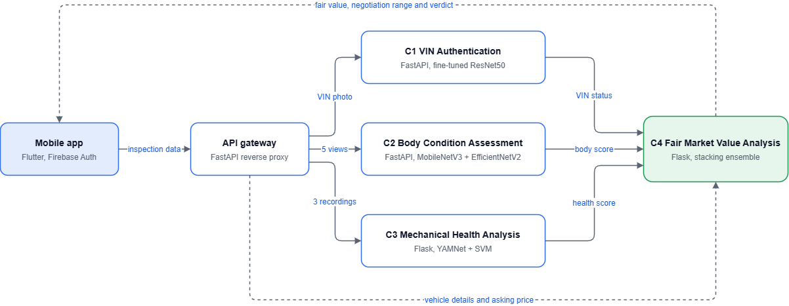
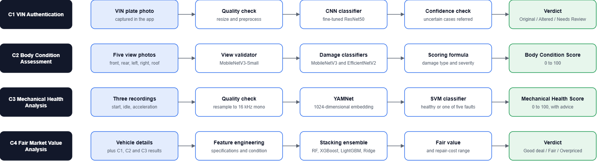

Domain
The research background of Watinakama.LK: what is already known, what is missing, the problem we set out to solve, and how we solved it.
1. Literature survey
The survey covers the four areas the system draws on, plus the economic context that motivates it.
1.1 Information asymmetry in used-vehicle markets
Akerlof's analysis of the used-car market showed that when sellers know more about quality than buyers, good vehicles are undervalued and poor ones overvalued, and trust in the whole market declines.[1] The practical remedies are independent inspection and transparent pricing. Both are expensive when they depend on human experts, which is the opening for automated, low-cost inspection.
1.2 Image-based tamper and manipulation detection
Deep convolutional networks have become the standard approach to image classification, and residual networks in particular made very deep models trainable.[2] In image forensics, Bayar and Stamm showed that a CNN can learn manipulation traces directly from pixels instead of relying on hand-designed forensic features.[3] Most of this work targets general photographs or documents. Stamped or engraved VIN plates photographed in poor lighting on a phone are a different input, and public datasets of tampered VIN plates are not available, so transfer learning from ImageNet-pretrained backbones such as ResNet and MobileNet[4] with task-specific fine-tuning is the realistic route.
1.3 Vehicle exterior damage assessment
Patil et al. demonstrated that transfer learning on pretrained CNNs can classify car damage types from photographs even with a small dataset.[5] The CarDD dataset later provided a large public benchmark for damage detection and segmentation and showed that small, low-contrast damage such as scratches remains hard.[6] This literature is driven by insurance-claim processing: it asks what is damaged, not what the damage does to the vehicle's value. Efficient architectures such as MobileNetV3[7] and EfficientNetV2[8] make it feasible to serve such models cheaply for a mobile client.
1.4 Acoustic fault diagnosis
Engine condition monitoring has traditionally used vibration sensors or hand-crafted audio features such as MFCCs with classical classifiers. Large-scale audio pretraining changed the options available: AudioSet[9] and the CNN architectures trained on it[10] produced general-purpose audio embeddings, of which YAMNet is a widely used lightweight example. Pairing such embeddings with a support vector machine[11] suits small datasets, because only the classifier has to be trained. The open questions are whether this works on uncontrolled smartphone recordings, and how to obtain labelled fault recordings at all.
1.5 Used-vehicle price prediction
Pudaruth[12] and Gegic et al.[13] applied machine learning to used-car prices and found that ensembles of models outperform single regressors. Tree ensembles such as Random Forests,[14] XGBoost[15] and LightGBM[16] are now the usual choice for tabular data, and stacked generalisation[17] offers a principled way to combine them. These studies share one limitation: their inputs are listing attributes such as make, year, mileage and fuel type. Two vehicles with identical listings but very different physical condition receive the same predicted price.
Summary of the survey. Each sub-problem has a credible technical basis. What the literature does not provide is a system that measures condition directly and carries that measurement through to price, in a form a private buyer can use.
2. Research gap
Comparing the surveyed approaches against the capabilities a buyer needs exposes four gaps.
| Capability | Damage-detection research | Acoustic-diagnosis research | Price-prediction research | Watinakama.LK |
|---|---|---|---|---|
| Vehicle identity (VIN) verification | No | No | No | Yes |
| Exterior condition scored numerically | Partly | No | No | Yes |
| Engine fault diagnosis from a phone | No | Partly | No | Yes |
| Price adjusted for measured condition | No | No | No | Yes |
| Usable by a non-expert, no special hardware | Partly | No | Yes | Yes |
| Localised to Sri Lankan prices (LKR) | No | No | Partly | Yes |
- No integrated pipeline. Identity, body, engine and price are studied in isolation. No surveyed work chains them into one assessment.
- Price models ignore measured condition. Existing predictors use listing attributes only, so they cannot distinguish a well-kept vehicle from a damaged one with the same specifications.
- Diagnosis assumes specialist equipment. Acoustic and vibration approaches generally assume controlled recordings or dedicated sensors, not a buyer's phone on a seller's driveway.
- Data scarcity for the local context. There are no public datasets of tampered VIN plates or labelled faulty-engine recordings suited to this market, so a method for building training data is itself part of the research.
3. Research problem
How can a buyer with no mechanical expertise and no equipment other than a smartphone obtain an objective, evidence-based assessment of a used vehicle's authenticity, physical condition and mechanical health, and a fair market price that reflects that assessment?
The problem breaks down into four sub-problems, one for each component:
Identity
Can VIN plate tampering be detected from a single phone photograph, with uncertain cases flagged for human review instead of being forced into a verdict?
Body
Can exterior damage across five views be recognised reliably and reduced to one interpretable score?
Engine
Can common engine faults be distinguished from healthy operation using short, noisy smartphone recordings?
Price
Does adding measured condition to vehicle specifications produce a more useful fair-value estimate, and can it be turned into advice a buyer can act on?
4. Research objectives
Main objective
To design, implement and evaluate an integrated, smartphone-based system that verifies a used vehicle's identity, assesses its body and engine condition, and predicts a condition-aware fair market price for the Sri Lankan second-hand market.
Specific objectives
- Develop an image classifier that labels VIN plate images as Original, Altered or Needs Review, and compare pretrained CNN backbones for the task.
- Develop a body-condition pipeline that validates five exterior views, classifies damage and the affected body part, and computes a Body Condition Score (0–100).
- Develop an audio pipeline that classifies engine recordings as healthy or as one of five fault types and computes a Mechanical Health Score (0–100) with plain-language recommendations.
- Develop a valuation model that combines vehicle specifications with the outputs of objectives 1–3 to estimate fair value, a negotiation range and a verdict.
- Build training datasets for each task using augmentation and synthetic generation where real data is scarce, and document the method.
- Deliver the four models through a single cross-platform mobile application with a guided inspection workflow.
- Evaluate each model against baseline alternatives and report the comparison.
5. Methodology
The system is built as four independent model services behind one gateway, consumed by one mobile app. Each service can be trained, tested and deployed separately, which let the four components progress in parallel.


5.1 Research process
- Requirements and survey. Review of the literature and of how vehicles are inspected and priced in practice.
- Data acquisition. Collection of baseline images, recordings and price records, followed by augmentation and synthetic generation.
- Model experiments. For each component, several candidate architectures were trained and compared on held-out data.
- Service implementation. The selected model for each component was wrapped in a REST API with input validation.
- Integration. A Flutter app, an API gateway and containerised cloud deployment join the services into one workflow.
- Evaluation. Accuracy on test data per component, and end-to-end testing of the inspection flow.


5.2 Component 1: VIN authentication
A VIN plate photograph is quality-checked, preprocessed and passed to a CNN classifier. The output is one of three classes: Original Altered Needs Review. The third class exists so that low-confidence cases are referred to a person. Because real tampered plates are rare, a script generates tampered examples from genuine images by altering characters and adding blur, shift and noise. Six model configurations were compared, and a ResNet50 with its upper layers fine-tuned performed best.
5.3 Component 2: Body condition analysis
The user photographs the front, rear, left, right and roof. Three models run in sequence:
- a view validator (MobileNetV3-Small) that rejects a photo uploaded to the wrong slot before any analysis is done;
- a damage classifier (MobileNetV3-Small) and a body-part classifier (EfficientNetV2-B0), whose predictions are blended.
Damage type and severity per view are combined by a scoring formula into a Body Condition Score from 0 to 100. The dataset was expanded with rotation, flip and crop augmentation.
5.4 Component 3: Engine sound diagnosis
The user records the engine at start, idle and acceleration. Each clip is checked for duration and amplitude, resampled to 16 kHz mono and passed through YAMNet to obtain a 1024-dimensional embedding, which an SVM classifies as Healthy, Knocking, Misfiring, Rotational Imbalance, Tappet Noise or Battery/Starting Fault. The result is converted to a Mechanical Health Score:
80–100 Healthy 50–79 Inspection recommended 0–49 Critical fault
Labelled faulty recordings were not available, so a synthetic fault generator injects fault signatures into healthy recordings: high-frequency impulses for knocking, periodic amplitude drops for misfiring, and repetitive high-pitched taps for tappet noise. Time-shift, noise and pitch augmentation add variety. Sixteen healthy recordings yielded more than 400 training clips.
5.5 Component 4: Market valuation
Vehicle specifications are combined with the VIN status, Body Condition Score and engine result. A stacking regressor (Random Forest, XGBoost and LightGBM base learners with a Ridge final estimator) predicts fair market value in LKR. Repair-cost ranges for the detected engine fault and body damage produce a negotiation range, and the asking price is compared with fair value:
| Condition | Verdict |
|---|---|
| VIN classified as altered | Do not buy |
| Asking price more than 5% above fair value | Overpriced |
| Asking price within 5% of fair value | Fair price |
| Asking price more than 5% below fair value | Good deal |
The training set of more than 2,000 records was produced by a Monte Carlo style simulation over a base set of historical prices, so that combinations of body score, engine fault and mileage are all represented.
5.6 Mobile application and integration
The Flutter app guides the user through vehicle details, VIN scan, five-view body capture, three-stage audio recording and the results report. It checks that every backend is reachable before an inspection starts, keeps inspection data locally until the valuation is complete, and stores inspection history. Sign-in uses Firebase Authentication with e-mail verification and optional biometric unlock.
5.7 Limitations
Much of the training data is augmented or synthetic. The reported accuracies therefore describe performance on data drawn from the same process, and validation on larger sets of real tampered plates, real faulty engines and real transaction prices is the main item of future work.
6. Results
| Component | Selected model | Accuracy | Data | How the data was obtained |
|---|---|---|---|---|
| C1 VIN authentication | ResNet50, fine-tuned | 82.69% | 300+ images | Real VIN images plus synthetically tampered copies |
| C2 Body condition | MobileNetV3 + EfficientNetV2 ensemble | 86.98% | 500+ images | Base dataset expanded by rotation, flip and crop |
| C3 Engine audio | YAMNet + tuned SVM | 92.50% | 400+ clips | 16 healthy recordings expanded by the fault generator |
| C4 Market valuation | Stacking ensemble (RF, XGBoost, LightGBM) | 96.70% | 2,000+ records | Simulated from a base set of historical prices |
Model comparisons
| Model | Accuracy |
|---|---|
| EfficientNetB0 | 73.08% |
| MobileNetV2 | 75.00% |
| MobileNetV3-Large | 76.92% |
| ResNet50 | 78.85% |
| Hybrid (ResNet50 + MobileNetV3-Large) | 80.77% |
| ResNet50, fine-tuned | 82.69% |
| Model | Accuracy |
|---|---|
| EfficientNetV2-B0 | 85.12% |
| MobileNetV3-Small | 85.58% |
| Weighted ensemble (15% / 85%) | 86.98% |
| Model | Accuracy |
|---|---|
| MFCC + Random Forest | ≈ 84% |
| MFCC + SVM | 86.00% |
| YAMNet + SVM (default parameters) | 90.06% |
| YAMNet + SVM (grid-searched C, gamma) | 92.50% |
| Model | Accuracy |
|---|---|
| Random Forest / XGBoost alone | 92–94% |
| Stacking regressor (Ridge final estimator) | 96.70%, MAE ≈ LKR 121,000 |
7. Technologies used
Machine learning
Data and signal processing
Backend services
Mobile application
Deployment
Collaboration
References
- G. A. Akerlof, "The market for 'lemons': Quality uncertainty and the market mechanism," The Quarterly Journal of Economics, vol. 84, no. 3, pp. 488–500, 1970.
- K. He, X. Zhang, S. Ren, and J. Sun, "Deep residual learning for image recognition," in Proc. IEEE CVPR, 2016, pp. 770–778.
- B. Bayar and M. C. Stamm, "A deep learning approach to universal image manipulation detection using a new convolutional layer," in Proc. ACM Workshop on Information Hiding and Multimedia Security, 2016, pp. 5–10.
- M. Sandler, A. Howard, M. Zhu, A. Zhmoginov, and L.-C. Chen, "MobileNetV2: Inverted residuals and linear bottlenecks," in Proc. IEEE CVPR, 2018, pp. 4510–4520.
- K. Patil, M. Kulkarni, A. Sriraman, and S. Karande, "Deep learning based car damage classification," in Proc. IEEE ICMLA, 2017, pp. 50–54.
- X. Wang, W. Li, and Z. Wu, "CarDD: A new dataset for vision-based car damage detection," IEEE Transactions on Intelligent Transportation Systems, vol. 24, no. 7, pp. 7202–7214, 2023.
- A. Howard et al., "Searching for MobileNetV3," in Proc. IEEE/CVF ICCV, 2019, pp. 1314–1324.
- M. Tan and Q. V. Le, "EfficientNetV2: Smaller models and faster training," in Proc. ICML, 2021, pp. 10096–10106.
- J. F. Gemmeke et al., "Audio Set: An ontology and human-labeled dataset for audio events," in Proc. IEEE ICASSP, 2017, pp. 776–780.
- S. Hershey et al., "CNN architectures for large-scale audio classification," in Proc. IEEE ICASSP, 2017, pp. 131–135.
- C. Cortes and V. Vapnik, "Support-vector networks," Machine Learning, vol. 20, no. 3, pp. 273–297, 1995.
- S. Pudaruth, "Predicting the price of used cars using machine learning techniques," International Journal of Information & Computation Technology, vol. 4, no. 7, pp. 753–764, 2014.
- E. Gegic, B. Isakovic, D. Keco, Z. Masetic, and J. Kevric, "Car price prediction using machine learning techniques," TEM Journal, vol. 8, no. 1, pp. 113–118, 2019.
- L. Breiman, "Random forests," Machine Learning, vol. 45, no. 1, pp. 5–32, 2001.
- T. Chen and C. Guestrin, "XGBoost: A scalable tree boosting system," in Proc. ACM SIGKDD, 2016, pp. 785–794.
- G. Ke et al., "LightGBM: A highly efficient gradient boosting decision tree," in Advances in Neural Information Processing Systems, vol. 30, 2017.
- D. H. Wolpert, "Stacked generalization," Neural Networks, vol. 5, no. 2, pp. 241–259, 1992.